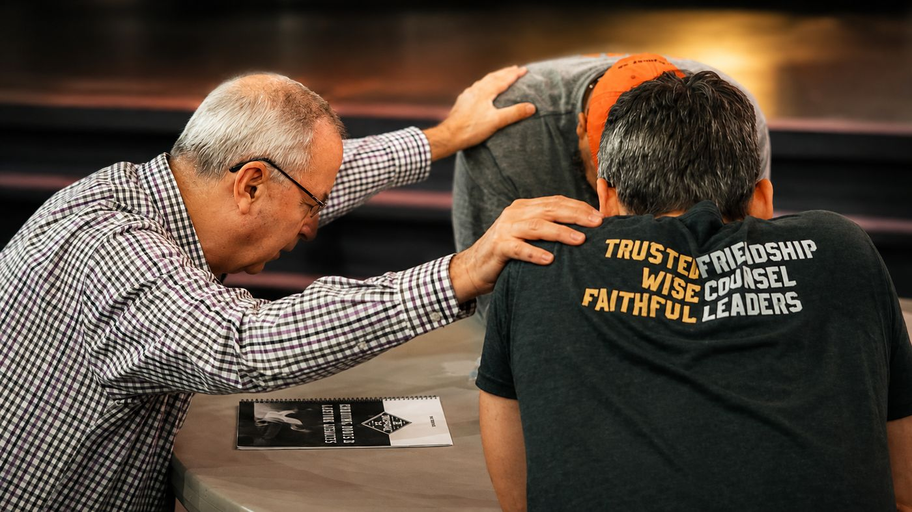
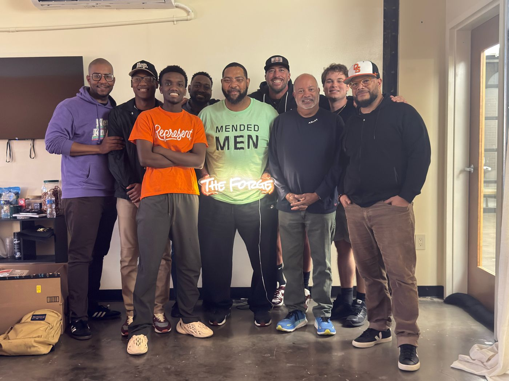
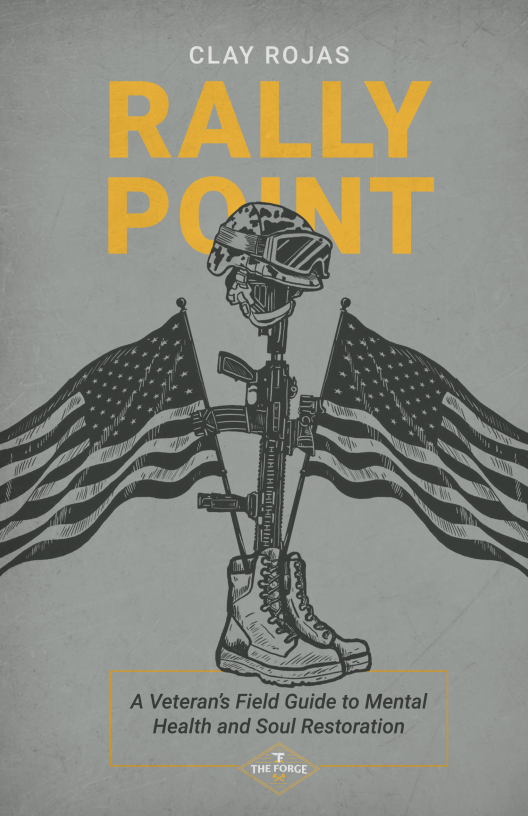

Counseling
Drawing on scriptural wisdom, our biblical counselors help men through struggles, invite God’s healing, and regain hope amid life’s inevitable trials.
Trusted friendship. Wise counsel. Faithful leaders.
The Forge is a Christian nonprofit that strengthens men through biblical counseling, trusted friendships, and faithful leaders, in Kansas City, Tulsa, and online.
To strengthen a man’s commitment to Christ by helping develop trusted friendships and offering sound biblical counsel.
Encouragement, direction, and wise counsel from trusted friends and mentors are sought after by all. Men today need trusted relationships to strengthen their faith and resolve to be servant leaders at home, at work, in the community, and in their local church.
“As iron sharpens iron, so one man sharpens another.” Proverbs 27:17

Drawing on scriptural wisdom, our biblical counselors help men through struggles, invite God’s healing, and regain hope amid life’s inevitable trials.

Faithful leaders shepherd with wisdom and care. We combine group facilitation tools and biblical counseling principles so leaders feel ready to help the men around them.

Forge groups make time for honest conversation about life and faith, often shoulder to shoulder in an activity. Men process together and grow in trusted friendships.
At The Forge, we believe it’s often the first step toward healing, freedom, and becoming the man God has called you to be.
Hear Clay Rojas, Tulsa Regional Director, share why so many men struggle in silence and how trusted friendships can change the direction of a man’s life.

Veteran-led. Christ-centered. Built for brotherhood.
Rally Point is a veteran-led, faith-based initiative that guides men from isolation into authentic brotherhood, from trauma into renewed purpose, and toward lasting hope through Jesus.
Every photo tells the story of men finding trusted friendships, wise counsel, and opportunities to grow into faithful leaders.


Occasional news, events, and encouragement from The Forge.